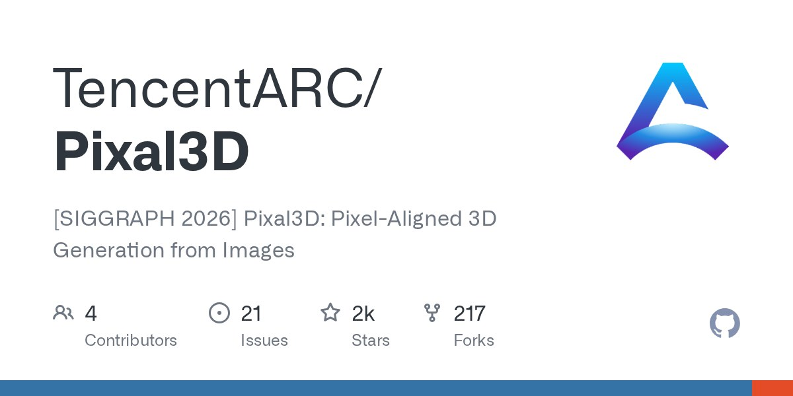

01
Pixal3D 開源多視圖 3D 生成：以 TRELLIS.2 為底，補上 Multi-view 推論與低 VRAM 路徑
騰訊 ARC 公開 Pixal3D 多視圖推論程式碼，可從單張或多視圖影像生成 3D，輸出 GLB，並提供較低顯存設定。這正面對應角色／道具多視圖一致性與可落地匯入 DCC 的需求。

AI 3D ★★★★★
完整分析
技術／工作流變化
Pixal3D 把單圖與多視圖 3D 生成放在同一套開源推論流程，專案以 TRELLIS.2 為基礎並提供 Multi-view inference、GLB 輸出與低 VRAM 選項。對既有 image-to-3D 測試而言，最大的變化不是只追單張外觀，而是可以把正側背等多視圖一起餵入，直接測跨視角幾何一致性。
Production 影響
對角色與道具製作，多視圖能減少單張生成常見的背面亂猜、左右結構漂移與局部厚度錯誤，特別適合目前 Meshy／Tripo 類工具的橫向測試。GLB 輸出也讓候選結果可以直接進 Blender、Max 或引擎檢查拓樸、UV、分件與材質，而不只停留在展示圖。
導入測試與限制
建議用同一組四視圖角色與硬表面道具建立 A/B 測試，記錄正背輪廓誤差、對稱性、細節保留、生成時間、VRAM 與後續 retopo 工時。它仍是研究型開源方案，低 VRAM 模式可能交換速度或品質，且 game-ready topology、UV 與可編輯分件仍必須另外驗證。